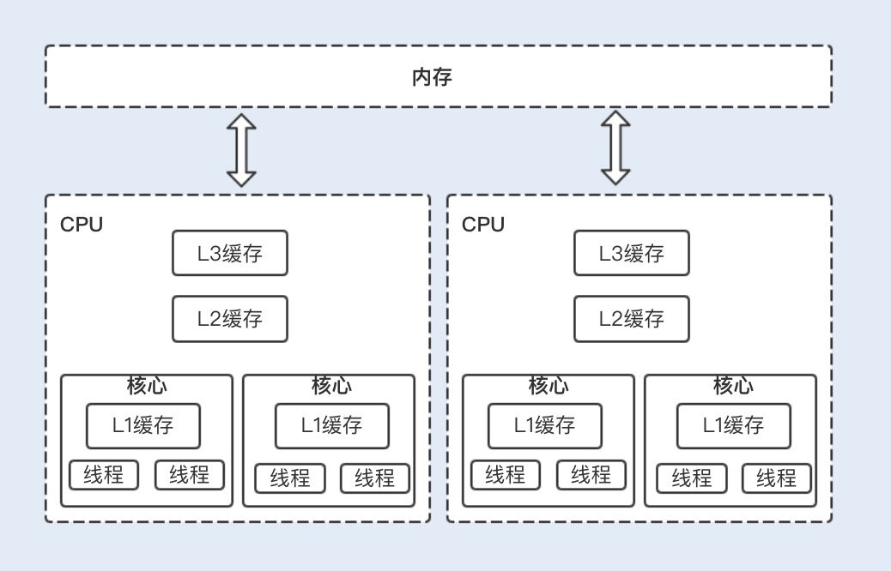
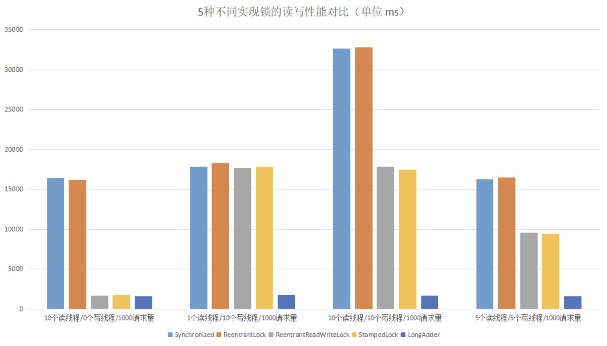

- 00 开篇词你为什么需要学习并发编程？.md.html
- 01 如何制定性能调优标准？.md.html
- 02 如何制定性能调优策略？.md.html
- 03 字符串性能优化不容小觑，百M内存轻松存储几十G数据.md.html
- 04 慎重使用正则表达式.md.html
- 05 ArrayList还是LinkedList？使用不当性能差千倍.md.html
- 06 Stream如何提高遍历集合效率？.md.html
- 07 深入浅出HashMap的设计与优化.md.html
- 08 网络通信优化之IO模型：如何解决高并发下IO瓶颈？.md.html
- 09 网络通信优化之序列化：避免使用Java序列化.md.html
- 10 网络通信优化之通信协议：如何优化RPC网络通信？.md.html
- 11 答疑课堂：深入了解NIO的优化实现原理.md.html
- 12 多线程之锁优化（上）：深入了解Synchronized同步锁的优化方法.md.html
- 13 多线程之锁优化（中）：深入了解Lock同步锁的优化方法.md.html
- 14 多线程之锁优化（下）：使用乐观锁优化并行操作.md.html
- 15 多线程调优（上）：哪些操作导致了上下文切换？.md.html
- 16 多线程调优（下）：如何优化多线程上下文切换？.md.html
- 17 并发容器的使用：识别不同场景下最优容器.md.html
- 18 如何设置线程池大小？.md.html
- 19 如何用协程来优化多线程业务？.md.html
- 20 磨刀不误砍柴工：欲知JVM调优先了解JVM内存模型.md.html
- 21 深入JVM即时编译器JIT，优化Java编译.md.html
- 22 如何优化垃圾回收机制？.md.html
- 23 如何优化JVM内存分配？.md.html
- 24 内存持续上升，我该如何排查问题？.md.html
- 25 答疑课堂：模块四热点问题解答.md.html
- 26 单例模式：如何创建单一对象优化系统性能？.md.html
- 27 原型模式与享元模式：提升系统性能的利器.md.html
- 28 如何使用设计模式优化并发编程？.md.html
- 29 生产者消费者模式：电商库存设计优化.md.html
- 30 装饰器模式：如何优化电商系统中复杂的商品价格策略？.md.html
- 31 答疑课堂：模块五思考题集锦.md.html
- 32 MySQL调优之SQL语句：如何写出高性能SQL语句？.md.html
- 33 MySQL调优之事务：高并发场景下的数据库事务调优.md.html
- 34 MySQL调优之索引：索引的失效与优化.md.html
- 35 记一次线上SQL死锁事故：如何避免死锁？.md.html
- 36 什么时候需要分表分库？.md.html
- 37 电商系统表设计优化案例分析.md.html
- 38 数据库参数设置优化，失之毫厘差之千里.md.html
- 39 答疑课堂：MySQL中InnoDB的知识点串讲.md.html
- 41 如何设计更优的分布式锁？.md.html
- 42 电商系统的分布式事务调优.md.html
- 43 如何使用缓存优化系统性能？.md.html
- 44 记一次双十一抢购性能瓶颈调优.md.html
- 加餐 什么是数据的强、弱一致性？.md.html
- 加餐 推荐几款常用的性能测试工具.md.html
- 答疑课堂：模块三热点问题解答.md.html
- 结束语 栉风沐雨，砥砺前行！.md.html
14 多线程之锁优化（下）：使用乐观锁优化并行操作
你好，我是刘超。
前两讲我们讨论了 Synchronized 和 Lock 实现的同步锁机制，这两种同步锁都属于悲观锁，是保护线程安全最直观的方式。
我们知道悲观锁在高并发的场景下，激烈的锁竞争会造成线程阻塞，大量阻塞线程会导致系统的上下文切换，增加系统的性能开销。那有没有可能实现一种非阻塞型的锁机制来保证线程的安全呢？答案是肯定的。今天我就带你学习下乐观锁的优化方法，看看怎么使用才能发挥它最大的价值。
什么是乐观锁
开始优化前，我们先来简单回顾下乐观锁的定义。
乐观锁，顾名思义，就是说在操作共享资源时，它总是抱着乐观的态度进行，它认为自己可以成功地完成操作。但实际上，当多个线程同时操作一个共享资源时，只有一个线程会成功，那么失败的线程呢？它们不会像悲观锁一样在操作系统中挂起，而仅仅是返回，并且系统允许失败的线程重试，也允许自动放弃退出操作。
所以，乐观锁相比悲观锁来说，不会带来死锁、饥饿等活性故障问题，线程间的相互影响也远远比悲观锁要小。更为重要的是，乐观锁没有因竞争造成的系统开销，所以在性能上也是更胜一筹。
乐观锁的实现原理
相信你对上面的内容是有一定的了解的，下面我们来看看乐观锁的实现原理，有助于我们从根本上总结优化方法。
CAS 是实现乐观锁的核心算法，它包含了 3 个参数：V（需要更新的变量）、E（预期值）和 N（最新值）。
只有当需要更新的变量等于预期值时，需要更新的变量才会被设置为最新值，如果更新值和预期值不同，则说明已经有其它线程更新了需要更新的变量，此时当前线程不做操作，返回 V 的真实值。
1.CAS 如何实现原子操作
在 JDK 中的 concurrent 包中，atomic 路径下的类都是基于 CAS 实现的。AtomicInteger 就是基于 CAS 实现的一个线程安全的整型类。下面我们通过源码来了解下如何使用 CAS 实现原子操作。
我们可以看到 AtomicInteger 的自增方法 getAndIncrement 是用了 Unsafe 的 getAndAddInt 方法，显然 AtomicInteger 依赖于本地方法 Unsafe 类，Unsafe 类中的操作方法会调用 CPU 底层指令实现原子操作。
// 基于 CAS 操作更新值
public final boolean compareAndSet(int expect, int update) {
return unsafe.compareAndSwapInt(this, valueOffset, expect, update);
}
// 基于 CAS 操作增 1
public final int getAndIncrement() {
return unsafe.getAndAddInt(this, valueOffset, 1);
}
// 基于 CAS 操作减 1
public final int getAndDecrement() {
return unsafe.getAndAddInt(this, valueOffset, -1);
2. 处理器如何实现原子操作
CAS 是调用处理器底层指令来实现原子操作，那么处理器底层又是如何实现原子操作的呢？
处理器和物理内存之间的通信速度要远慢于处理器间的处理速度，所以处理器有自己的内部缓存。如下图所示，在执行操作时，频繁使用的内存数据会缓存在处理器的 L1、L2 和 L3 高速缓存中，以加快频繁读取的速度。

一般情况下，一个单核处理器能自我保证基本的内存操作是原子性的，当一个线程读取一个字节时，所有进程和线程看到的字节都是同一个缓存里的字节，其它线程不能访问这个字节的内存地址。
但现在的服务器通常是多处理器，并且每个处理器都是多核的。每个处理器维护了一块字节的内存，每个内核维护了一块字节的缓存，这时候多线程并发就会存在缓存不一致的问题，从而导致数据不一致。
这个时候，处理器提供了总线锁定和缓存锁定两个机制来保证复杂内存操作的原子性。
当处理器要操作一个共享变量的时候，其在总线上会发出一个 Lock 信号，这时其它处理器就不能操作共享变量了，该处理器会独享此共享内存中的变量。但总线锁定在阻塞其它处理器获取该共享变量的操作请求时，也可能会导致大量阻塞，从而增加系统的性能开销。
于是，后来的处理器都提供了缓存锁定机制，也就说当某个处理器对缓存中的共享变量进行了操作，就会通知其它处理器放弃存储该共享资源或者重新读取该共享资源。目前最新的处理器都支持缓存锁定机制。
优化 CAS 乐观锁
虽然乐观锁在并发性能上要比悲观锁优越，但是在写大于读的操作场景下，CAS 失败的可能性会增大，如果不放弃此次 CAS 操作，就需要循环做 CAS 重试，这无疑会长时间地占用 CPU。
在 Java7 中，通过以下代码我们可以看到：AtomicInteger 的 getAndSet 方法中使用了 for 循环不断重试 CAS 操作，如果长时间不成功，就会给 CPU 带来非常大的执行开销。到了 Java8，for 循环虽然被去掉了，但我们反编译 Unsafe 类时就可以发现该循环其实是被封装在了 Unsafe 类中，CPU 的执行开销依然存在。
public final int getAndSet(int newValue) {
for (;;) {
int current = get();
if (compareAndSet(current, newValue))
return current;
}
}
在 JDK1.8 中，Java 提供了一个新的原子类 LongAdder。LongAdder 在高并发场景下会比 AtomicInteger 和 AtomicLong 的性能更好，代价就是会消耗更多的内存空间。
LongAdder 的原理就是降低操作共享变量的并发数，也就是将对单一共享变量的操作压力分散到多个变量值上，将竞争的每个写线程的 value 值分散到一个数组中，不同线程会命中到数组的不同槽中，各个线程只对自己槽中的 value 值进行 CAS 操作，最后在读取值的时候会将原子操作的共享变量与各个分散在数组的 value 值相加，返回一个近似准确的数值。
LongAdder 内部由一个 base 变量和一个 cell[] 数组组成。当只有一个写线程，没有竞争的情况下，LongAdder 会直接使用 base 变量作为原子操作变量，通过 CAS 操作修改变量；当有多个写线程竞争的情况下，除了占用 base 变量的一个写线程之外，其它各个线程会将修改的变量写入到自己的槽 cell[] 数组中，最终结果可通过以下公式计算得出：
我们可以发现，LongAdder 在操作后的返回值只是一个近似准确的数值，但是 LongAdder 最终返回的是一个准确的数值， 所以在一些对实时性要求比较高的场景下，LongAdder 并不能取代 AtomicInteger 或 AtomicLong。
总结
在日常开发中，使用乐观锁最常见的场景就是数据库的更新操作了。为了保证操作数据库的原子性，我们常常会为每一条数据定义一个版本号，并在更新前获取到它，到了更新数据库的时候，还要判断下已经获取的版本号是否被更新过，如果没有，则执行该操作。
CAS 乐观锁在平常使用时比较受限，它只能保证单个变量操作的原子性，当涉及到多个变量时，CAS 就无能为力了，但前两讲讲到的悲观锁可以通过对整个代码块加锁来做到这点。
CAS 乐观锁在高并发写大于读的场景下，大部分线程的原子操作会失败，失败后的线程将会不断重试 CAS 原子操作，这样就会导致大量线程长时间地占用 CPU 资源，给系统带来很大的性能开销。在 JDK1.8 中，Java 新增了一个原子类 LongAdder，它使用了空间换时间的方法，解决了上述问题。
11～13 讲的内容，我详细地讲解了基于 JVM 实现的同步锁 Synchronized，AQS 实现的同步锁 Lock 以及 CAS 实现的乐观锁。相信你也很好奇，这三种锁，到底哪一种的性能最好，现在我们来对比下三种不同实现方式下的锁的性能。
鉴于脱离实际业务场景的性能对比测试没有意义，我们可以分别在“读多写少”“读少写多”“读写差不多”这三种场景下进行测试。又因为锁的性能还与竞争的激烈程度有关，所以除此之外，我们还将做三种锁在不同竞争级别下的性能测试。
综合上述条件，我将对四种模式下的五个锁 Synchronized、ReentrantLock、ReentrantReadWriteLock、StampedLock 以及乐观锁 LongAdder 进行压测。
这里简要说明一下：我是在不同竞争级别的情况下，用不同的读写线程数组合出了四组测试，测试代码使用了计算并发计数器，读线程会去读取计数器的值，而写线程会操作变更计数器值，运行环境是 4 核的 i7 处理器。结果已给出，具体的测试代码可以点击Github查看下载。

通过以上结果，我们可以发现：在读大于写的场景下，读写锁 ReentrantReadWriteLock、StampedLock 以及乐观锁的读写性能是最好的；在写大于读的场景下，乐观锁的性能是最好的，其它 4 种锁的性能则相差不多；在读和写差不多的场景下，两种读写锁以及乐观锁的性能要优于 Synchronized 和 ReentrantLock。
思考题
我们在使用 CAS 操作的时候要注意的 ABA 问题指的是什么呢？